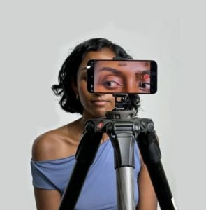

Shakti Mb Director, co-editor
Shakti Mb is a New York based artist, filmmaker, and software designer whose work explores the psychology of people. Her work has been supported by Rhizome, NEW INC, Emergent Ventures, Mozilla, and UnionDocs, and presented at the New Museum, Anthology Film Archives, and DCTV. Her net-art archive, My Girlfriend Is a JSON File, received a 2024 Rhizome Microgrant. She is currently a NEW INC Y13 member and was previously a NEW INC Art + Code Fellow, Mozilla Counter Structures resident, and UnionDocs Collaborative Studio Fellow.